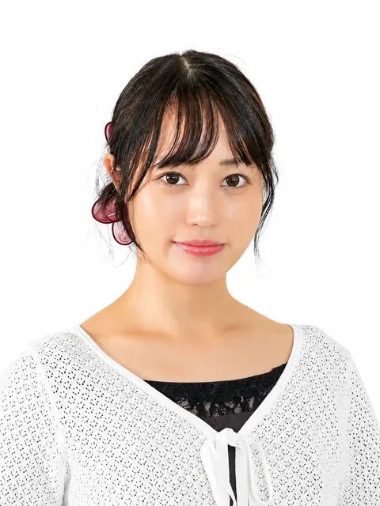
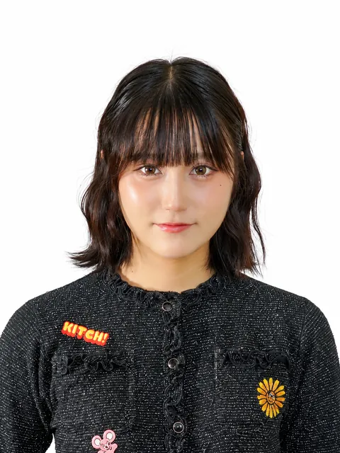
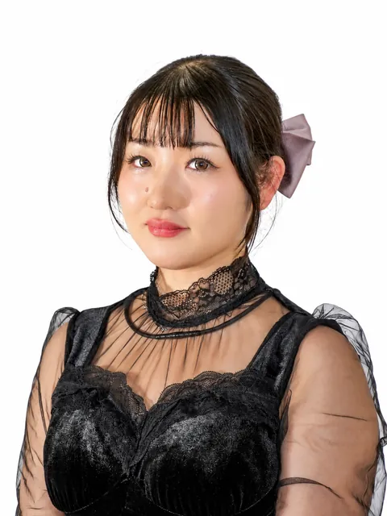
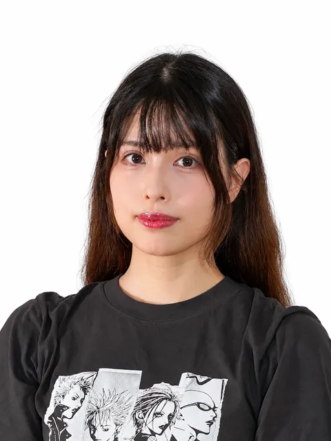

フライヤー画像
NEXT 1
公演タイトル
2027年○月○日（○）〜○日（○）
劇場名
主催団体名
QR
本日はご来場いただき
誠にありがとうございます最後までごゆっくりお楽しみください。
2027年○月○日（○）〜○日（○）
劇場名
主催団体名
2027年○月○日（○）〜○日（○）
劇場名
主催団体名
2027年○月○日（○）〜○日（○）
劇場名
主催団体名
2027年○月○日（○）〜○日（○）
劇場名
主催団体名
BSD presents 公演 宵牙狼「家族の絆」
制作：(同)萬屋天狼 イベント事業部
お問い合わせ：info.tenrou.event@gmail.com
難攻不落と言われた小田原城が豊臣により滅ぼされた。北条家の滅亡……そんな戦の爪痕の中でも人は生きる。元北条家家臣『梶原景宗』は護衛団を名乗りその日暮らしとなっていた。又同じく北条家家臣であった『成田長泰』も関ヶ原の爪痕を生きていた。そんな中付近の山中ではひっそりと暮らす山民の家族がいた。娘の紅葉。父の左衛門。母の奈々。戦をしない者達の物語が始まる。
紅葉は帰りの道中に何者かに襲われるが、護衛団達に救われる。その日暮らしの護衛団達はお助け代金をもらおうとするが山小屋暮らしの者達に支払える余裕はない。変わりに宿と食事。一宿一飯の恩義で返す。そんな時ある盗賊団が紅葉を襲う。守る護衛団達。何故紅葉を襲うのか……謎が謎を呼びそれは次第に一つの真実に辿り着く。
紅葉が狙われる訳……それは……




※サンプル：役名・配役・グループ・相関・次回公演は仮の内容です
— 3 —— 2 —